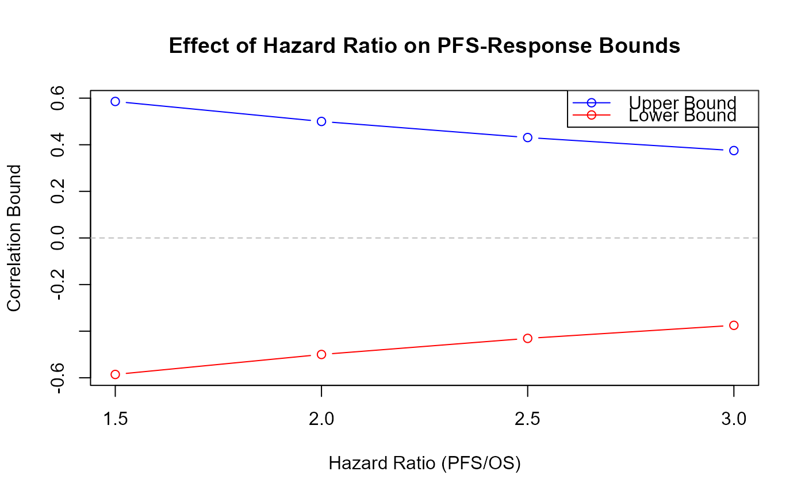

Compute Correlation Bounds Between Response and PFS in OS-PFS-Response Framework
Source:R/CorBoundResponsePFS.R
CorBoundResponsePFS.RdComputes the lower and upper bounds of the correlation coefficient between
a binary response endpoint and progression-free survival (PFS) in the specific
context where all three endpoints (OS, PFS, Response) are modeled together
using the Fleischer model. Unlike CorBoundResponseTTE, which
provides general bounds that depend only on the response probability, this
function provides bounds that depend on both the response probability and
the hazard rates of OS and PFS.
Arguments
- p
Numeric. The true probability of the binary response endpoint. Must be between 0 and 1 (exclusive).
- hazard_OS
Numeric. The hazard rate for overall survival (OS). Must be positive.
- hazard_PFS
Numeric. The hazard rate for progression-free survival (PFS). Must be positive and strictly greater than hazard_OS to ensure PFS <= OS.
Value
A numeric vector of length 2 containing:
First element: Lower bound (maximum negative dependence)
Second element: Upper bound (maximum positive dependence)
Details
This function calculates correlation bounds for the specific setting where:
OS ~ Exp(hazard_OS)
TTP (time to progression) ~ Exp(hazard_TTP) where hazard_TTP = hazard_PFS - hazard_OS
PFS = min(OS, TTP) ~ Exp(hazard_PFS) (Fleischer model)
Response is a binary endpoint with probability p
Response is correlated with OS (not directly with PFS)
The correlation bounds are derived using Fréchet-Hoeffding copula bounds: $$\sqrt{\frac{1-p}{p}} \frac{\lambda_{OS}}{\lambda_{TTP}} \left[(1-p)^{\lambda_{TTP}/\lambda_{OS}} - 1\right] \leq \text{Corr}(PFS, Response) \leq \sqrt{\frac{p}{1-p}} \frac{\lambda_{OS}}{\lambda_{TTP}} \left[1 - p^{\lambda_{TTP}/\lambda_{OS}}\right]$$
where \(\lambda_{TTP} = \lambda_{PFS} - \lambda_{OS}\).
Key differences from CorBoundResponseTTE:
CorBoundResponseTTE: General bounds for any TTE-Response correlation, depends only on p (hazard-independent)CorBoundResponsePFS: Specific bounds for PFS-Response correlation in the OS-PFS-Response framework, depends on p and both hazard rates
The bounds depend on the hazard rates because PFS is defined as min(OS, TTP), and the correlation between PFS and Response is induced through the correlation between OS and Response combined with the stochastic relationship PFS = min(OS, TTP).
Note
Important distinctions:
When generating only TTE + Response (e.g., OS + Response or PFS + Response), use
CorBoundResponseTTEto determine feasible correlationsWhen generating OS + PFS + Response together, the correlation between PFS and Response is not directly specified but emerges from: - The specified correlation between OS and Response - The Fleischer model relationship PFS = min(OS, TTP)
This function calculates the range of possible correlations between PFS and Response given the structural constraints of the three-endpoint model
The bounds are achieved by:
Lower bound: Countermonotonic copula \(C(u,v) = \max\{u+v-1, 0\}\) between OS and Response
Upper bound: Comonotonic copula \(C(u,v) = \min\{u, v\}\) between OS and Response
Interpretation of hazard ratio effects:
When hazard_PFS >> hazard_OS (most patients progress before death), the correlation bounds become narrower and approach zero
When hazard_PFS ≈ hazard_OS (few progressions before death), the bounds approach those of
CorBoundResponseTTE
References
Fleischer, F., Gaschler-Markefski, B., & Bluhmki, E. (2009). A statistical model for the dependence between progression-free survival and overall survival. Statistics in Medicine, 28(21), 2669-2686.
See also
CorBoundResponseTTE for general TTE-Response correlation bounds,
CorResponsePFS for calculating specific PFS-Response correlations,
CopulaParamResponseTTE for computing copula parameters,
rOncoEndpoints for generating correlated oncology endpoints
Examples
# Example 1: Calculate bounds for typical oncology trial parameters
# Median OS = 30 months, Median PFS = 18 months, Response rate = 40%
CorBoundResponsePFS(
p = 0.4,
hazard_OS = log(2) / 30,
hazard_PFS = log(2) / 18
)
#> [1] -0.5302313 0.5598511
# Example 2: Compare with general TTE-Response bounds
p <- 0.4
hazard_OS <- log(2) / 30
hazard_PFS <- log(2) / 18
# General bounds (OS-Response or PFS-Response alone)
general_bounds <- CorBoundResponseTTE(p = p)
cat("General TTE-Response bounds:", general_bounds, "\n")
#> General TTE-Response bounds: -0.6256311 0.7481482
# Specific bounds (PFS-Response in OS-PFS-Response framework)
pfs_bounds <- CorBoundResponsePFS(p = p, hazard_OS = hazard_OS, hazard_PFS = hazard_PFS)
cat("PFS-Response bounds (3-endpoint):", pfs_bounds, "\n")
#> PFS-Response bounds (3-endpoint): -0.5302313 0.5598511
# Note: PFS-Response bounds are typically narrower than general bounds
# Example 3: Effect of hazard ratio on bounds
p <- 0.5
hazard_OS <- 0.04
# Different PFS hazard rates (different hazard ratios)
hazard_PFS_vec <- c(0.06, 0.08, 0.10, 0.12)
results <- sapply(hazard_PFS_vec, function(h_pfs) {
CorBoundResponsePFS(p = p, hazard_OS = hazard_OS, hazard_PFS = h_pfs)
})
# Plot the effect of hazard ratio
hazard_ratio <- hazard_PFS_vec / hazard_OS
plot(hazard_ratio, results[2, ], type = "b", col = "blue",
ylim = range(results), xlab = "Hazard Ratio (PFS/OS)",
ylab = "Correlation Bound", main = "Effect of Hazard Ratio on PFS-Response Bounds")
lines(hazard_ratio, results[1, ], type = "b", col = "red")
legend("topright", legend = c("Upper Bound", "Lower Bound"),
col = c("blue", "red"), lty = 1, pch = 1)
abline(h = 0, lty = 2, col = "gray")

# Example 4: Extreme case - when hazard_PFS >> hazard_OS
# (PFS is much shorter than OS, i.e., most patients progress before death)
CorBoundResponsePFS(
p = 0.6,
hazard_OS = 0.02,
hazard_PFS = 0.20 # PFS hazard is 10x larger
)
#> [1] -0.09069806 0.13471136
# Bounds are narrower, indicating weaker possible correlation
# Example 5: Demonstrating the bounds narrow as hazard ratio increases
p <- 0.4
hazard_OS <- 0.05
hazard_ratio_seq <- seq(1.1, 5, by = 0.1)
bounds_matrix <- sapply(hazard_ratio_seq, function(hr) {
CorBoundResponsePFS(p, hazard_OS, hazard_OS * hr)
})
plot(hazard_ratio_seq, bounds_matrix[2, ] - bounds_matrix[1, ],
type = "l", lwd = 2,
xlab = "Hazard Ratio (PFS/OS)",
ylab = "Bounds Width (Upper - Lower)",
main = "Correlation Bounds Width vs Hazard Ratio")
grid()